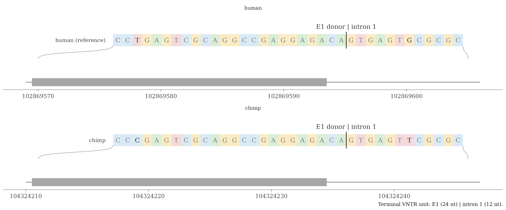
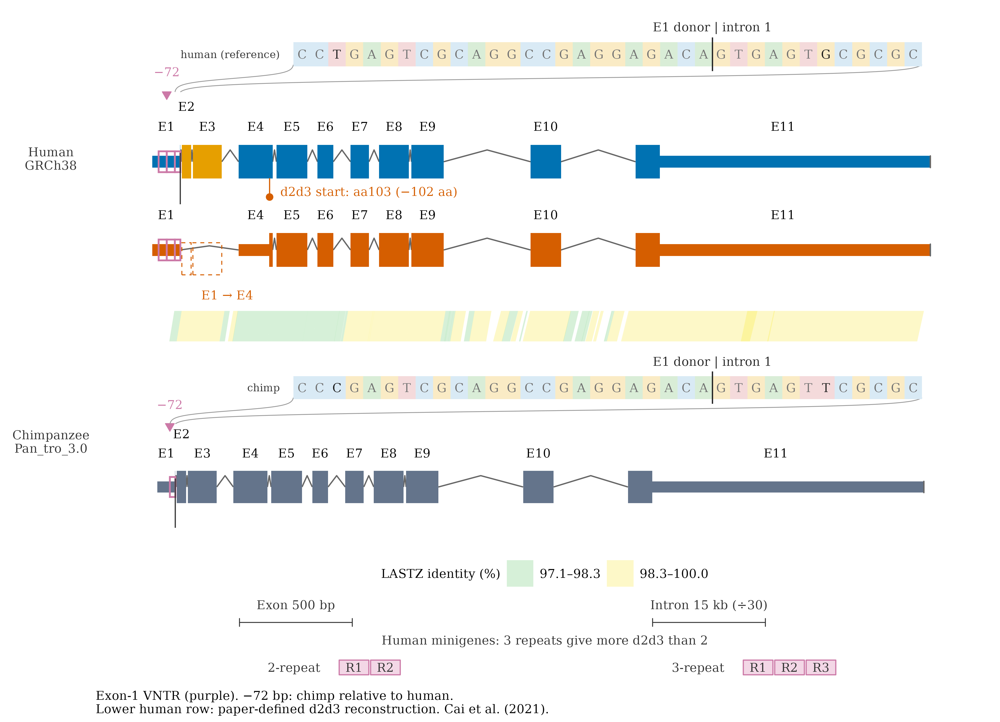

AS3MT: transcripts, protein start and DNA repeats
Source:vignettes/as3mt-splice-variants-demo.Rmd
as3mt-splice-variants-demo.RmdLoad the example
Compare human full-length AS3MT, a paper-defined d2d3 reconstruction, and chimpanzee full-length AS3MT. Coordinates use GRCh38 and Pan_tro_3.0, respectively. All inputs are bundled; no downloads are needed.
1. Transcripts and compressed introns
geom_exon2() shows CDS as thick boxes and UTR as thin
boxes. Keep the full-reference exon numbering: d2d3 retains E1
and E4–E11; dashed boxes mark skipped E2/E3.
scale_x_ggexon_genomic(intron_factor = 30) compresses
introns 30-fold while keeping exon widths. geom_nuclink()
automatically follows that same piecewise scale in both annotation
panels.
as3mt_plot <- plot_as3mt_example(as3mt, intron_factor = 30, show_protein = FALSE)
as3mt_plot$plot
Transcript comparison; introns compressed 30-fold.
The helper uses this grammar:
ggexon(as3mt$comparison) +
geom_exon2(aes(xmin = xmin - 0.5, xmax = xmax + 0.5,
ymin = isoform_y, transcripts = transcript_name, fill = exon_class),
annotation_type = "all", compress_introns = FALSE,
utr_height = 0.35, cds_height = 1) +
geom_nuclink(alignment = "human_chimp", aes(fill = identity_band),
inherit.aes = FALSE) +
facet_genomics(vars(track), scales = "free_x", ncol = 1) +
scale_x_ggexon_genomic(intron_factor = 30,
guide = guide_x_ggexon_piecewise(by = "panel"))Ribbons retain the two highest LASTZ identity categories, 97.1–98.3% and 98.3–100%. The 37 ungapped blocks split into 57 polygon pieces at scale boundaries. They show DNA similarity, not expression or proof of exon skipping.
2. Protein change on the human reference
The assigned d2d3 protein contains 273 aa, corresponding to canonical human residues 103–375 instead of 1–375. Its loss of 102 N-terminal aa is a consequence of the assigned downstream start; E2/E3 skipping removes 169 RNA bases, not a 306-nt in-frame deletion.
Project residue 103 through the full-length human
CDS with project_mutations_to_genome(). Its codon
is GRCh38 chr10:102872584–102872586 in E4. The example
helper returns that projection:
protein_change <- as3mt_protein_change(as3mt)
knitr::kable(protein_change[, c("position", "xmin", "xmax", "lost_aa")],
col.names = c("Canonical residue", "Codon start", "Codon end", "Lost aa"))| Canonical residue | Codon start | Codon end | Lost aa |
|---|---|---|---|
| 103 | 102872584 | 102872586 | 102 |
geom_protein_lollipop() accepts the projected genomic
anchor. Its stem starts on the human reference CDS; the head labels the
new start and amino-acid loss. The helper assigns every
generated layer to track = "human", so the event
is not repeated on the chimp panel. The genomic scale moves the anchor
with the exon when intron compression changes.
protein_layers <- geom_protein_lollipop(protein_change, position = "anchor",
spread_threshold = 0, track_ymax = 1.8, mutation_y = 1.57,
show_backbone = FALSE, show_domains = FALSE)
for (i in seq_along(protein_layers)) protein_layers[[i]]$data$track <- "human"
as3mt_plot$plot + protein_layersThe label marks an isoform protein-start change, not a splicing-causal SNV.
3. DNA detail at the exon-1 repeat
The selected human reference contains three 36-bp VNTR units; the chimp reference has one imperfect homolog (34/36 matching bases). The terminal unit contains 24 exonic and 12 intronic bases. Both references retain the GT donor:
CCTGAGTCGCAGGCCGAGGAGACA | GTGAGTGCGCGC
human exon 1 | intron 1Prepare two aligned strings with an explicitly named human reference.
- denotes a gap and does not consume genomic bases. The
strings are verified against the bundled FASTAs; the donor-anchored
alignment places 72 chimp gap columns opposite two human repeat
copies.
v <- readRDS(file.path(demo_dir, "vntr-dna.rds"))
sequence_data <- alignseq_data(v$aligned, v$anchors, reference = "human",
regions = v$regions, details = v$details, flank = 0)geom_alignseq() places each species’ DNA on its own
panel. Default markers show differences, with DNA callouts for selected
details. Letters are equally spaced schematically; smooth connectors
retain genomic anchors. For a short window, mode = "rows"
shows all selected bases:
sequence_example <- plot_as3mt_alignseq(demo_dir, intron_factor = 30)
sequence_example$rows
Cai et al. tested otherwise matched two- and three-repeat human minigenes; three repeats produced more d2d3. This supports repeat-dependent splicing regulation, but does not establish sufficiency for the isoform’s evolutionary origin. The human allele experiment differs by 36 bp; the figure’s −72 bp marker instead compares the selected chimp and human references. Two base differences in the chimp homolog are context, not demonstrated causal SNVs.
Sources and reproducibility
- Li et al. (2016), doi:10.1038/nm.4096: d2d3 reconstruction, protein assignment and repeat sequence.
- Cai et al. (2021), doi:10.1093/schbul/sbaa098: human VNTR minigene comparison.
The installed extdata/as3mt directory contains the
plotting helper, input snapshots and provenance. Repository
preparation/export scripts are in data-raw/as3mt; the
genomic ribbons use LASTZ --nogapped --chain blocks.
Combined result
The human reference lollipop marks aa103 (−102 aa). Purple outlines locate the VNTR; each species keeps its own DNA callout. Separate bars below the legend show exon and compressed-intron scales. The lower human transcript remains a paper-defined reconstruction; the repeat-count strip summarizes the tested human alleles schematically.
grid::grid.newpage()
grid::grid.draw(sequence_example$grob)
AS3MT transcripts, assigned protein-start change and exon-1 VNTR.